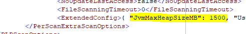

Before Fix:
When running FSAA SDD scans, the FSAA scanners would allocate a certain amount of memory per scanner to scan the file. The amount allocated was based on a variety of factors (file type, file size, available RAM, etc.). In a situation where the allocated heap size was exceeded for a particular file, a broken pipe error would occur which had downward effects on the rest of the scan, resulting in incomplete/failed SDD scans.
After Fix:
The allocated memory per scanner is now configurable thru the job xml. By default, SDD
scans will have a max heap size of 1500 MB per scanner. If the amount of memory required
to scan a particular file exceeds this amount, a broken pipe error will still occur.
However, this will no longer have any downward effects on the rest of the scan. The rest
of the scan should proceed as normal, and the broken pipe error will be limited to that
file.
To scan files that require more memory, you can modify the Max Heap Size
in the Job XML:

Please note that this value is in MB and it applies on a per scanner basis.
Submitted by:
Michael Burrofato
Affected Versions:
SDD 11.0.0.82
Affected Module:
DC – FSAA – SDD